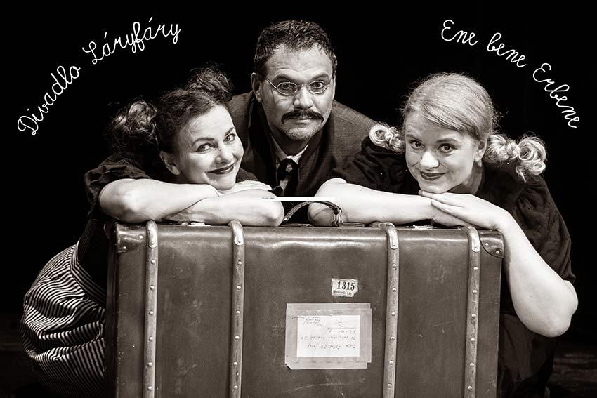
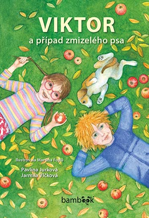
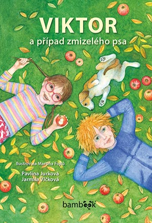

Divadlo pro děti. Chcete se zasmát a zároveň něco dozvědět?
Děti, vemte rodiče a prarodiče a přijďte na originální představení Divadla Láryfáry.
Uvidíte, že zajíc je pomalejší než želva, flašinetářky mívají zelené uši, raraši nekamarádí s prasaty, námořníci hoří láskou k mořským pannám a hlavně, že na nádraží straší… Ale nebojte se, jak už to bývá, všechno-špatně-dopadne!
Rádi cestujeme a hrajeme všude tam, kde jsme potřeba!
Zveme vás na:
-
Pohádka "O Kačence a Raráškovi"
16.3. v 15:00 - KC - Nové Strašecí
29.3. v 10:00 - Komorní divadlo Kalich - Praha
-
Pohádka - „Strakaté bajky“
15.2. v 10:00 - Divadlo Viola - Praha
23.4. v 10:00 - Kino Lípa - Duchcov
13.5. v 10:00 - Knihovna - Meziboří
24.5. v 10:00 - Hradištko
25.5. v 9:30 - zámek - Teplice
-
Pohádka „Kouzla a čáry tajemné Prahy“
20.1. v 8:30 a 10:00 - Divadlo - Jablonec
23.1. v 9:00 a 10:30 - KC "12" - Praha
25.1. v 10:00 - Divadlo Viola - Praha
20.2. v 10:00 - KD - Pelhřimov
15.3. v 10:00 - Komorní divadlo Kalich - Praha
7.6. v 17:00 - hrad Lipý - Česká Lípa
-
Pohádka o třech námořnících
17.2 v 8:30 a 10:00 - Divadlo - Prachatice
23.2. v 10:00 - Komorní divadlo Kalich - Praha
13.4. v 15:00 - Divadlo - Jablonec
31.5. v 15:00 - Východočeské divadlo Pardubice - malá scéna
18.7. v 10:00 - Biopark by Veolia - Kladno
-
Pohádka o strašidelném nádraží
12.1. v 15:00 - Divadlo - Horní Počernice
9.2. v 10:00 - Komorní divadlo Kalich - Praha
12.4. v 10:00 - Komorní divadlo Kalich - Praha
8.6. v 10:30 - Divadlo - Teplice
21.6. v 10:00 - KD - Plzeň
-
Indiáni ze šuplíku
14.5. v 10, 13 a 15 hod. - Divadlo - Slaný
-
Cirkusácká pohádka
26.1. v 15:00 - Divadlo - Slaný
10.2. ve 14:00 - Dům kultury - Kroměříž
12.2. v 8:30 a 10:15 - Divadlo - Jablonec
16.2 v 15:00 - Divadlo - Prachatice
2.3. v 15:00 - Divadlo - Třinec
9.3. v 10:00 - Komorní divadlo Kalich - Praha
6.4. v 15:00 - Divadlo - Klatovy
26.4. v 15:00 - venkovní akce "rok 1920" - Litomyšl
27.4. v 15:00 - divadlo Hogo Fogo - Dražkov
10.8. v 10:30 - hrad Hněvín
-
Ene bene Erbene
28.1. v 9:00 a 10:30 - Divadlo - Horní Počernice
29.1. v 9:00 - Divadlo - Horní Počernice
4.2. v 13:30 - Divadlo A. Dvořáka - Příbram
8.3. v 10:00 - Divadlo Viola - Praha
12.5. v 9:00 - Divadlo - Žatec
17.6. v 9:00 - KD - Plzeň
ZMĚNA PROGRAMU VYHRAZENA
Divadlo Láryfáry ve spolupráci s divadlem Viola uvádí novou rodinnou pohádku inspirovanou životem a dílem Karla Jaromíra Erbena:
Ene bene Erbene
Pozor, pozor! Bude šrumec! Přijelo k vám DÍVADLO, které si pro vás připravilo spoustu krásných pohádek. A všechny budou od Karla Jaromíra Erbena!
A to ještě netušíte, že si s sebou herci přivezli starou kouzelnou knihu, ze které si společně s dětmi přivolají samotného pana ERBENA...

Milí příznivci našeho divadla!
Na Vaše přání jsme se rozhodli do programu zařadit i autorská
čtení z našich knih
Viktor a záhadná teta Bobina,
Viktor a případ zmizelého psa
a
Hra o sen.
V případě zájmu se na nás neváhejte obrátit.
Kontakt: Jarmila Vlčková 608 823 463,
vlckovajarmila@seznam.cz.
 
